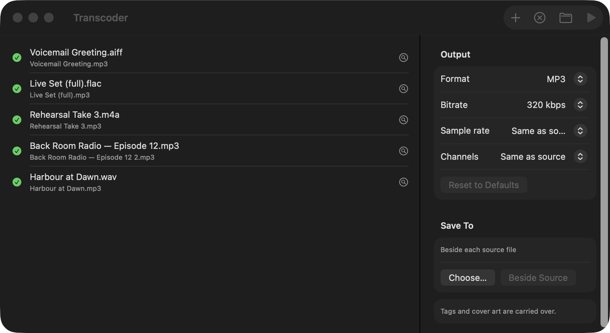
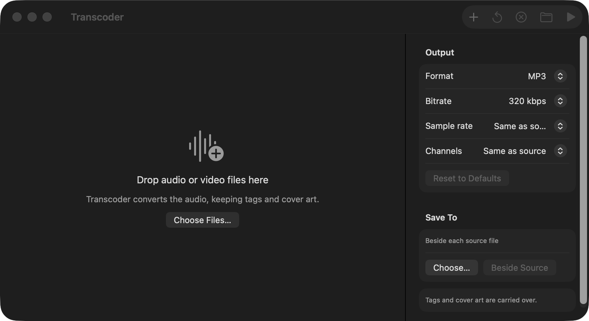
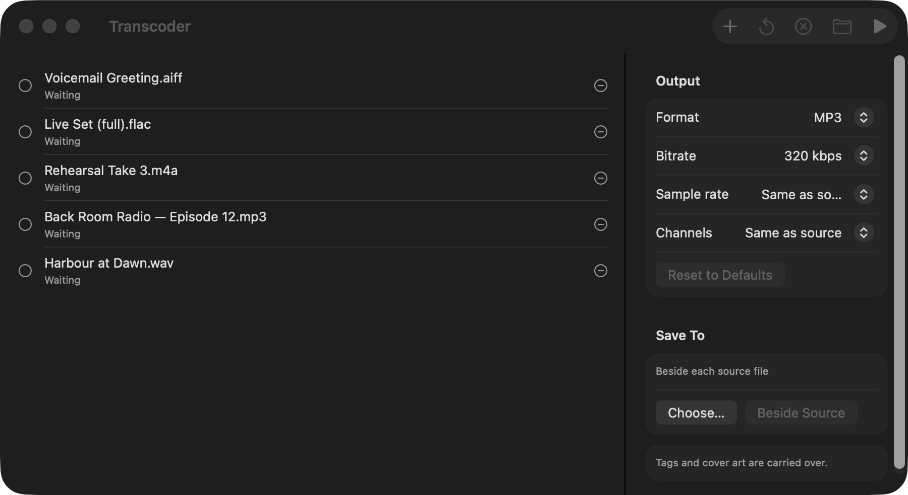
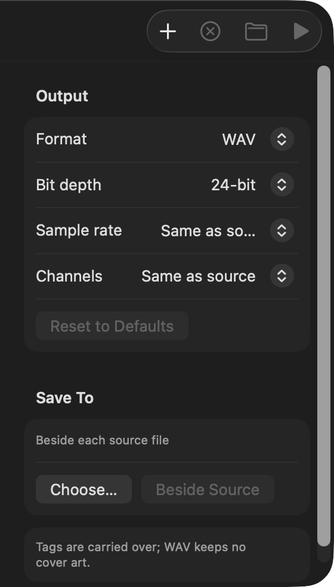
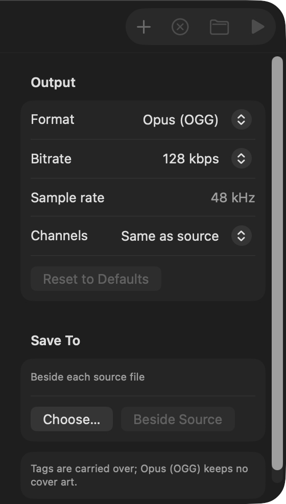
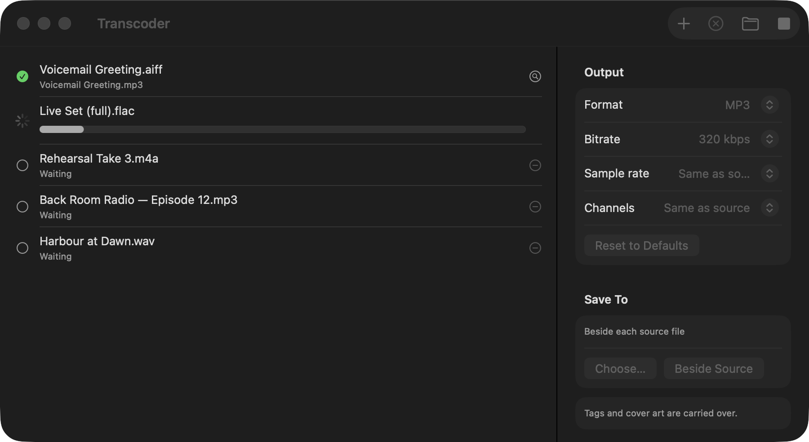

Transcoder
Transcoder converts audio files on a Mac. It writes MP3, AAC, Apple Lossless, FLAC, WAV, AIFF and Opus. From a video file, it writes only the first audio track. It copies the tags and the cover art.

Getting Started
System Requirements
- macOS 15.0 (Sequoia) or later.
- A Mac with Apple Silicon. Transcoder does not operate on a Mac with an Intel processor.
- No other software. FFmpeg and ffprobe are in the app.
- Transcoder is free and open source (MIT licence).
Install Transcoder
- Download the DMG file. Use the link at the top of this page.
- Open the DMG file.
- Drag Transcoder to the Applications folder.
- Open Transcoder from the Applications folder.
Convert Files
- Drag audio files, video files or folders onto the Transcoder window.
- Select the output format in the Format menu.
- Set the other settings in the settings pane, if necessary.
- Click the Convert button, or push ⌘↩.
Transcoder writes each output file in the same folder as its source file. To use a different folder, see Save To.
The Interface
The Transcoder window has two parts. The queue is on the left. The settings pane is on the right.

Queue
The queue has one row for each file. A row shows the name of the source file. Below the name, the row shows the status of the file. See Row Status.
At the end of the row there is one button:
- The remove button (−) removes a row that has no output file: a file that is waiting, failed or was cancelled.
- The magnifier button shows a completed output file in Finder.
Right-click a row to see its commands: Reveal in Finder, Convert Again and Remove. See Convert a File Again. While Transcoder converts files, you cannot remove rows or convert them again.
Settings Pane
The settings pane has the output format, the format settings and the output folder. A note at the bottom tells you if the format can hold cover art. You cannot change the settings while Transcoder converts files.
Toolbar
| Button | Key | Function |
|---|---|---|
| Add Files (+) | ⌘O | Opens a panel. In the panel, select files or folders. The menu command File › Add Files… does the same. |
| Convert Again | Changes all rows that are completed, failed or cancelled back to Waiting. See Convert a File Again. | |
| Clear Finished | Removes all rows that are completed, failed or cancelled. Rows that are waiting stay in the queue. | |
| Reveal in Finder | Shows all output files of the queue in Finder. | |
| Convert | ⌘↩ | Converts all files that are waiting. While Transcoder converts files, this button changes to Cancel. |
Help Menu
- Transcoder Help (⌘?) shows a short summary of how to use Transcoder.
- Check for Updates… looks for a new version now. See Updates.
- Report an Issue… opens a new issue on GitHub.
Adding Files
You can add files and folders in two ways.
Drag Files onto the Window
- Select the files or folders in Finder.
- Drag them onto the Transcoder window.
The queue changes colour when you hold files above it.
Use the Open Panel
- Click the Add Files button (+), or push ⌘O. If the queue is empty, you can also click the Choose Files… button.
- Select one or more files or folders.
- Click Open.

Files That Transcoder Accepts
Transcoder accepts a file if macOS identifies its extension as audio or video. Some examples are MP3, M4A, WAV, AIFF, FLAC, Ogg, Opus, MOV, MP4 and M4V.
Transcoder also accepts these extensions. FFmpeg can read them, but macOS does not always identify them as audio:
.dsfand.dff(DSD audio).weba(WebM audio).tak(TAK),.shn(Shorten),.wv(WavPack),.ape(Monkey's Audio),.tta(TTA) and.mpc(Musepack).rf64(WAV files larger than 4 GB).mkaand.mkv(Matroska)
Transcoder ignores all other files and does not show a message. If you add the same file two times, the queue shows it one time. This also applies if you add the file through an alias path or a symbolic link.
When you add a folder, Transcoder looks in the folder and in all its subfolders. It ignores hidden files. It adds the files in the alphabetical order of their paths.
Output Formats
Transcoder uses one output format for all files in a batch. Select the format in the Format menu at the top of the settings pane.
| Extension | Format | Description |
|---|---|---|
| .mp3 | MP3 | Lossy. Almost all players can play it. The encoder is LAME. The tags are ID3v2.3, with an ID3v1 tag for old players. |
| .m4a | AAC (M4A) | Lossy. This is the format of Apple Music. At the same quality, the file is smaller than MP3. The encoder is the AAC encoder of FFmpeg. |
| .m4a | Apple Lossless (M4A) | Lossless. The file is approximately half the size of WAV. Music, iPhone and iPad can play it. |
| .flac | FLAC | Lossless and open. Many archives and download stores use it. |
| .wav | WAV | Uncompressed PCM. Use it for audio editors. It keeps the tags, but not the cover art. A WAV file larger than 4 GB is written as RF64, the extension of WAV for large files. The extension stays .wav. |
| .aiff | AIFF | Uncompressed PCM, the Apple equivalent of WAV. The tags and the cover art are ID3. An AIFF file cannot be larger than 4 GB. See Troubleshooting. |
| .opus | Opus (OGG) | Lossy. Of the three lossy formats, Opus gives the best quality at a low bitrate. Speech is good at 48 kbps. The sample rate is always 48 kHz. The encoder is libopus. It keeps the tags, but not the cover art. |
Format Settings
Each format has its own settings. Transcoder keeps the settings of each format. For example, if you change from MP3 to FLAC and back to MP3, the MP3 bitrate does not change. Transcoder also keeps the format and the output folder when you quit.


| Menu | Formats | Values |
|---|---|---|
| Bitrate | MP3, AAC, Opus | MP3: 96, 128, 160, 192, 224, 256, 320 kbps (default 320). AAC: 96, 128, 160, 192, 256, 320 kbps (default 256). Opus: 48, 64, 96, 128, 160, 192, 256 kbps (default 128). MP3 and AAC use the bitrate for all of the file. Opus changes the bitrate a small quantity above and below the value. |
| Bit depth | WAV, AIFF, FLAC, Apple Lossless | 16-bit or 24-bit (default 24). WAV also has 32-bit float. |
| Sample rate | All formats, but not Opus | Same as source (default), 44.1, 48, 88.2 or 96 kHz. For MP3: Same as source, 32, 44.1 or 48 kHz. Opus is always 48 kHz. |
| Channels | All formats | Same as source (default), Mono or Stereo. |
Set the Default Values Again
- Select the format in the Format menu.
- Click the Reset to Defaults button.
Same as Source
Same as source keeps the value of the source file. There are two exceptions:
- MP3: The maximum sample rate is 48 kHz. If the source file has a higher sample rate, the output file has a sample rate that MP3 can hold. For example, a 96 kHz source file gives a 48 kHz MP3 file. MP3 is also mono or stereo only. If the source file has more than two channels, for example 5.1, the output file is stereo.
- Opus: Transcoder writes Opus in mono or stereo. If the source file has more than two channels, the output file is stereo.
AAC, Apple Lossless, FLAC, WAV and AIFF keep all channels of a surround source file.
A higher sample rate or bit depth than the source file makes the output file larger. It does not make the quality better.
Save To
By default, Transcoder writes each output file in the same folder as its source file.
Write All Output Files to One Folder
- In the Save To section, click the Choose… button.
- Select a folder. To make a new folder, click New Folder.
- Click Choose.
Write Each Output File Next to Its Source File
- In the Save To section, click the Beside Source button.
File Names
Transcoder does not write over a file. The output file has the name of the source file and the extension of the output format. If a file with that name exists, Transcoder adds a number: Episode 12.mp3, Episode 12 2.mp3, Episode 12 3.mp3. This also applies when the source file has the same format as the output file. Transcoder does not change the source file.
The Batch Queue
When you click the Convert button, Transcoder converts all rows that are waiting. It converts one file at a time, from the top of the queue to the bottom. It uses the format, the settings and the output folder that are set when you click Convert. You cannot change the settings until the batch is completed.

Row Status
| Status | Symbol | Meaning |
|---|---|---|
| Waiting | Empty circle | Transcoder converts the file when you click the Convert button. |
| Converting | Progress indicator and progress bar | The progress bar shows the part of the file that is converted. |
| Completed | Green check mark | The row shows the name of the output file. To show the file in Finder, click the magnifier button. |
| Failed | Orange triangle | The row shows the cause, usually the last lines from FFmpeg. Transcoder deletes the incomplete output file. |
| Cancelled | Circle with a line | You clicked the Cancel button before or during the conversion of the file. |
Stop a Batch
- Click the Cancel button.
Transcoder stops the current file and deletes its incomplete output file. The current file and all other files of the batch that wait change to Cancelled. Completed files do not change. Files that you added during the batch continue to wait.
Convert a File Again
You can convert a completed, failed or cancelled file again, for example with a different format or different settings.
- Right-click the row and select Convert Again. To do this for all rows that are completed, failed or cancelled, click the Convert Again button in the toolbar.
- The row changes to Waiting. If necessary, change the format or the settings.
- Click the Convert button.
Transcoder does not write over the first output file. The new output file gets the next free name, for example Episode 12 2.mp3. See File Names.
During a Batch
You can add files at any time. Files that you add during a batch wait for the next batch. While Transcoder converts files, you cannot remove rows, and Convert Again and Clear Finished are not available. To remove all rows that are completed, failed or cancelled after the batch, click the Clear Finished button.
Tags & Cover Art
Transcoder copies the tags of the source file to the output file, for example the title, the artist, the album and the track number. Some formats keep the tags in the container (MP3, M4A, FLAC, WAV, AIFF). Ogg and Opus keep the tags on the audio stream. Transcoder reads the tags from the correct location. FFmpeg writes its own encoder tag. Transcoder does not copy chapters.
If the source file has a cover picture, Transcoder copies it to all formats that can hold it:
| Format | Tags | Cover art |
|---|---|---|
| MP3 | Yes (ID3v2.3 and ID3v1) | Yes |
| AAC, ALAC | Yes (iTunes atoms) | Yes |
| FLAC | Yes (Vorbis comments) | Yes |
| AIFF | Yes (ID3) | Yes |
| WAV | The usual tags only (RIFF INFO: title, artist, album and some others) | No. WAV has no standard location for a picture. |
| Opus | Yes (Vorbis comments) | No. The Ogg writer of FFmpeg cannot add a picture. |
Transcoder copies a JPEG or PNG cover without change. It converts other picture types to JPEG. The note at the bottom of the settings pane tells you if the selected format can hold cover art.
Updates
When Transcoder starts, it looks on GitHub for a new version. If there is no new version, it does not show a message.
Look for an Update Now
- Select Help › Check for Updates….
Transcoder always shows the result.
Install an Update
- When the update message shows, click Update and Relaunch.
Transcoder downloads the update. It makes sure that the DMG and the app in it have the same Developer ID signature as the installed app. Then it replaces the installed app and starts again. If a step fails, Transcoder does not change the installed app. It shows a Download button. Use this button to download the DMG and install it yourself.
An update does not stop a batch. Transcoder waits until the batch is completed. Then it asks you before it starts again.
When the Button Is Download
In some conditions, Transcoder cannot replace itself. The update message then shows a Download button, not Update and Relaunch. This occurs if:
- Transcoder operates from the DMG or from the Downloads folder. Move it to the Applications folder.
- You do not have permission to replace the app.
- The app is not a signed release.
If a new version needs a newer macOS than your Mac has, Transcoder does not offer it. Check for Updates… tells you this.
Troubleshooting
| Message | Cause and action |
|---|---|
| The file has no audio. | The file has no audio stream. It is a video with no sound, or a file with an incorrect extension. Use a different source file. |
| Could not read the file: … | ffprobe cannot open the file. The message shows the cause that ffprobe gives, for example Invalid data found when processing input: the file is damaged or incomplete, or FFmpeg cannot read its format. Use a different source file. |
| The output folder is not available: … | The folder in Save To does not exist now. Usually, it is on a drive that is disconnected. Connect the drive, or choose a different folder. |
| Too large for AIFF: … | The AIFF file would be larger than 4 GB, and an AIFF file cannot hold more. For example, 8 channels of 24-bit audio at 192 kHz reach 4 GB after 15½ minutes. Select WAV, FLAC or Apple Lossless, or a lower sample rate, bit depth or number of channels. Transcoder usually shows this message before it starts. If the source file does not give its length, Transcoder shows it after the conversion and deletes the output file. |
| FFmpeg failed (exit …): … | The conversion failed. The message shows the last lines from FFmpeg. Usually, a part of the source file is damaged. |
| FFmpeg finished but wrote no file. | Possibly the output folder moved or became read-only during the conversion. Make sure that the output folder exists and that you can write to it. |
| The bundled FFmpeg is missing. | The app is damaged. Download and install Transcoder again. |
For other problems, select Help › Report an Issue…. This opens a new issue on GitHub.
FFmpeg & Licences
Transcoder uses FFmpeg 9.0.2 to decode and encode audio. The app contains the ffmpeg and ffprobe programs. They are a static, audio-only build for Apple Silicon. The script scripts/build-ffmpeg.sh in the repository makes them. The build contains two other libraries:
- LAME 4.0, for MP3 (LGPL).
- libopus 1.6.1, for Opus (BSD 3-clause).
AAC, Apple Lossless, FLAC, WAV and AIFF use the encoders of FFmpeg.
--enable-gpl, --enable-nonfree or --enable-version3. The corresponding source is the FFmpeg, LAME and Opus release archives in Vendor/ffmpeg-manifest.env, and the script scripts/build-ffmpeg.sh. The build is reproducible: if you build again, you get the same binaries. See Vendor/README.md and The Bundled FFmpeg.
FFmpeg is a trademark of Fabrice Bellard, originator of the FFmpeg project. Transcoder is not related to the FFmpeg project.